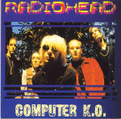

Computer K.O.
CD 590
Tracks 1-17 from The MCV, Vredenburg, Utrecht, Holland, 24/Jun/97
<1> Lucky
<2> My Iron Lung
<3> Airbag
<4> Exit Music [For a Film]
<5> Planet Telex
<6> Talk Show Host
<7> Fake Plastic Trees
<8> Paranoid Android
<9> Karma Police
<10> You
<11> Climbing Up The Walls
<12> No Surprises
<13> Just
<14> Street Spirit [Fade Out]
<15> The Bends
<16> Thinking About You
<17> The Tourist
Type of recording : Radio Broadcast
Quality : Excellent
Notes :